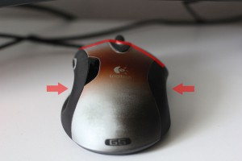
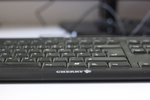
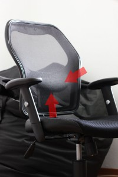

Gesundes Arbeiten im Büro – Teil 2 – Gesunder Bildschirmarbeitsplatz
Experten haben bewiesen, dass langes Sitzen am Arbeitsplatz negative Auswirkungen auf unsere Gesundheit haben kann. Bewegung zwischendurch, zum Beispiel der Gang ins nächste Büro, kann die Muskeln entspannen und die Augen entlasten. Aber auch die Ausrüstung am Arbeitsplatz selbst ist von Bedeutung. Denn Fakt ist: ergonomische Büromöbel und Arbeitsmittel verhindern unnötige Arbeitsausfälle, da Fehlhaltungen vorgebeugt wird.
Die Maus

Abb. 1
Bevor in neue Büroeinrichtung investiert wird, sollte zuallererst ein Blick auf die typischen Arbeitsmittel gelegt werden. Eine schlechte Tastatur und zu kleine und schlecht geformte Maus führen schnell zu Krämpfen in Handgelenken und Fingern.
Eine gute Maus passt sich der natürlichen Handstellung an. Sie ist komfortabler als die normalen Mäuse, schont zusätzlich Gelenke und Sehnen. Bei einer guten Computermaus liegen Handgelenk, Daumen, Finger und die Handfläche in einer natürlichen Position. Idealerweise sind hier Einkerbungen für Daumen und Zeigefinger an den Mausseiten vorhanden (Siehe Abb. 1). Eine griffige und nicht zu glatte Maus-Oberfläche ist empfehlenswert.
Wer viel surft, sollte besonderen Wert darauf legen, dass die Maus zusätzliche Tasten an der Daumenseite hat. Das erleichtert das Navigieren im Browser und spart wertvolle Mausmeter. Mit einer guten Maus lassen sich bereits Schmerzen, die teilweise bis in die Schulter ziehen können, verhindern. Achten Sie beim Kauf darauf, ob die Maus für Links- oder Rechtshänder gedacht ist.
Die richtige Tastatur

Abb.2
Eine ergonomische Tastatur ermöglicht eine effektivere Eingabe der Daten in den Computer und ein entspanntes Arbeiten. Vor allem Arme, Hände und der Schulterbereich werden es Ihnen danken. Die neue Tastatur ist meist gewöhnungsbedürftig. Sie ist abgewinkelt und hat eine gewölbte Tastenanordnung. Wie normale Tastaturen ist auch das ergonomische Modell neigbar. Die Tasten sollten gut lesbar beschriftet sein. Das ist genauso wichtig, wie die Lage der Sondertasten. Diese müssen gut erreichbar sein.
Wer lieber eine normale Tastatur nutzen möchte, sollte sich ein Modell heraussuchen, bei dem der Druckpunkt als besonders angenehm empfunden wird. Ebenfalls sollte darauf geachtet werden, dass die Tastatur geräuscharm ist. In einem Zimmer, in dem 3 Tastaturen ununterbrochen klappern, ist konzentriertes Arbeiten nur schwer möglich! (Siehe Abb.2)
Der Arbeitsplatz muss so aufgeteilt sein, dass vor der Tastatur genug Platz ist, um die eigenen Hände bequem aufzulegen. Damit die Belastung auf alle Finger verteilt wird, ist das Zehn-Finger System beim Schreiben auf der Tastatur von Vorteil. Die Handgelenke sollten bei der Eingabe möglichst gerade gehalten und nicht geknickt oder verdreht werden. Am Wichtigsten sind auch hier regelmäßige Erholungspausen.
Nicht vergessen: Maus und Tastatur müssen regelmäßig gereinigt werden. Eine Vielzahl von Bakterien kann sich sonst ungehindert auf den Eingabegeräten ausbreiten.
Den richtigen Schreibtisch finden und konfigurieren
Da jeder Mensch unterschiedlich ist, ist es wichtig, den Schreibtisch auf die entsprechende Körpergröße einzustellen. Bereits hier lassen sich durch die richtige Einstellung Fehlhaltungen vermeiden. Die Höhe ist also abhängig vom Benutzer und vom Bürostuhl.
Grundsätzlich sollte sich die richtige Schreibtischhöhe zwischen 68 und 76 Zentimetern bei sitzender Tätigkeit und bei Arbeiten im Stehen zwischen 118 und 127 Zentimetern befinden.
Die optimale Schreibtischhöhe zeigt diese Tabelle:
| Tischhöhe in Zentimeter | Körperhöhe in Zentimeter |
| 62 | 160 |
| 64 | 165 |
| 66 | 160 |
| 68 | 165 |
| 70 | 170 |
| 72 | 175 |
| 74 | 180 |
| 76 | 185 |
Beides, also das Arbeiten im Stehen und Sitzen, gewähren elektrisch höhenverstellbare Schreibtische. Diese Modelle bieten die Möglichkeit, kurzfristig im Stand zu arbeiten und anschließend wieder in gewohnter Sitzposition Platz zu nehmen. Idealerweise geschieht das vollautomatisch in einprogrammierten Zyklen. Dieses Prinzip bezeichnet man als „Steh-Sitz-Dynamik“.
Dieses Prinzip bringt viele Vorteile mit. Durch den Wechsel wird der Rücken entlastet. Aber auch andere Effekte sind nachgewiesen:
- Aktivierung des Herz-Kreislauf-Systems
- Erhöhte Konzentrationsfähigkeit und Aufnahmefähigkeit
- Müdigkeit wird
Ein elektrisch höhenverstellbarer Schreibtisch ist in der Anschaffung teuer, kann aber für eine bessere Mitarbeitergesundheit sorgen.
Damit alle Unterlagen und Geräte am Schreibtisch Platz finden, sollte dieser mindestens 160 Zentimeter breit und 80 Zentimeter tief sein. Diese Vorgabe empfiehlt sich für Büroarbeitsplätze.
Der Sitzende muss die Arme und Beine auch einmal ausstrecken können. Regale und Schränke unter dem Schreibtisch sind nützlich, dürfen aber nicht stören. Der Nutzer benötigt also Beinfreiheit. Die Farbe oder Beschichtung des Schreibtisches sollte möglichst reflexionsarm gewählt werden. Ein Hochglanz- oder Glastisch ist also für die Büroarbeit denkbar ungeeignet.
Der Bildschirm
Der Mindestabstand zum Bildschirm beträgt je nach Bildschirmgröße zwischen 50 und 80 Zentimetern, bzw. ist in etwa eine Armweite entfernt. Idealerweise schaut man von oben nach unten leicht abfallend auf den Bildschirm.
Gerade wer den ganzen Tag mit dem PC arbeitet, hat in den Abendstunden oftmals müde und brennende Augen oder regelmäßige Kopfschmerzen. Die Ursachen hierfür können zu geringer oder zu weiter Abstand zum Bildschirm, schlechte Lichtverhältnisse, oder nachlassendes Sehvermögen sein. Bürotätige sollten daher regelmäßig ihre Augen untersuchen lassen – besonders wenn häufig Kopfschmerzen auftreten. Gönnen Sie Ihren Augen auch kurze Pausen!
Der perfekte Bürostuhl und die optimale Sitzhaltung
Ein guter ergonomischer Bürostuhl kann bereits manche Rückenschmerzen verhindern. Aber das ist kein Allheilmittel: Verspannungen in Schulter, Nacken, Rücken und Armen werden oftmals durch zu langes und einseitiges Sitzen verursacht.
Doch bereits durch die Verbesserung der Sitzhaltung kann viel erreicht werden. Achten Sie darauf aufrecht zu sitzen. Idealerweise sollte der Winkel zwischen Ober und Unterschenkel 90 Grad betragen. Der Rücken befindet sich immer an der Rückenlehne und die komplette Sitzfläche wird benutzt. Versuchen Sie bewusst auf Ihre Sitzhaltung zu achten. Wichtig sind auch gelegentliche Pausen um der Rückenmuskulatur Erholung zu gönnen.
Unterstützen können Sie ihre Sitzhaltung mit einem guten Bürostuhl. Grundsätzlich ist ein Stuhl der mindestens mit einer Wippmechanik ausgestattet ist, zu empfehlen. Einige Modelle die diese Mechanik haben, sind bereits ab 120 € erhältlich. Sitz man täglich mindestens 8 Stunden oder länger auf dem Bürostuhl, empfiehlt sich ein Modell mit Synchronmechanik. Durch das Wippen werden die Bandscheiben entlastet und durchblutet. Eine einseitige Sitzhaltung wird somit vermieden.

Abb. 3
Ein Bürostuhl mit Lordosenstütze (siehe Abb. 3) stützt den Lendenwirbelbereich ideal und ist ebenfalls eine sinnvolle Investition. Stühle mit Kopfstütze entlasten die Nackenpartie zusätzlich. Grundsätzlich sollte jeder Bürostuhl kippsicher sein und einen bequemen weichen Bezug haben. Armlehnen sind nützlich und entlasten die Schultern.
Achten Sie darauf, dass Sie die empfohlene Sitzdauer des Stuhles nicht überschreiten. Sind nur maximal vier Stunden angegeben, können bei längerer Sitzdauer Verspannungen auftreten.
Weitere Artikel
Gruselige Bürohelfer – Weg mit der Verschwendung
Als ich neulich dieses Plakat gesehen habe, hat es mich ordentlich gegruselt. Mein ersten Gedanken: Häßlich, altmodisch und Verschwendung pur! Wenn Sie verstehen wollen, was meine Arbeit, meinen Anspruch ausmacht, dann müssen Sie …
Personalverwaltung optimieren
Die Personalverwaltung ist wichtiger Bestandteil eines jeden Unternehmens. Sie verursacht jedoch häufig auch hohen Arbeitsaufwand, der vor allem bei schlechter Organisation oder fehlender IT verwirrend und kompliziert werden …